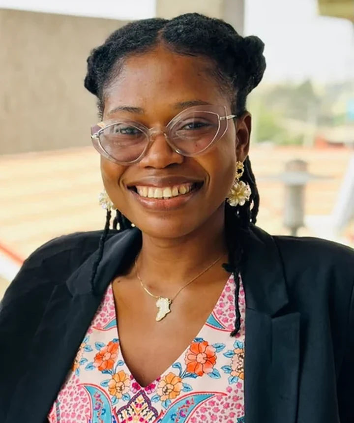
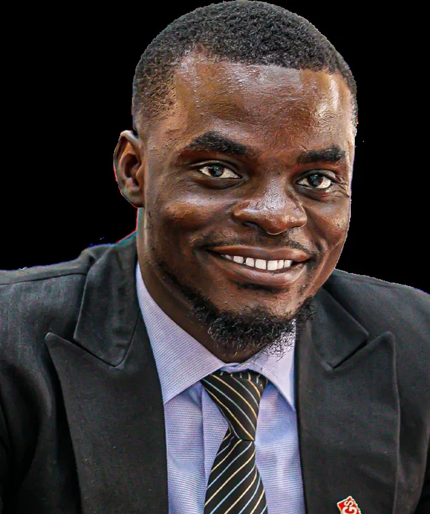
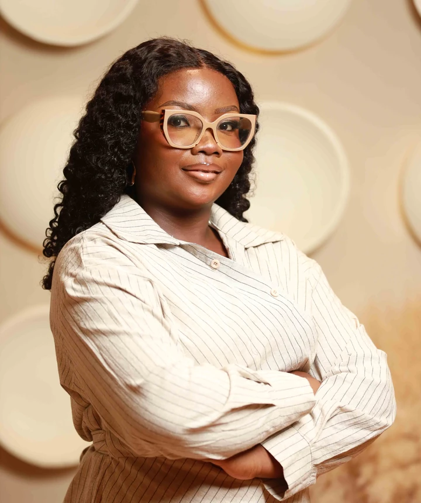

Meaningful youth participation in education reform.
Bring credible, diverse youth perspectives into decision-making, values education, school-level feedback and responsible collaboration with education stakeholders.
The Youth Advisory Board Ghana is an eleven-member platform bringing young people into the decisions, partnerships and practical work shaping secondary education reform.

Young people contributing to education-sector planning and dialogue.
Established in 2024, the Youth Advisory Board (YAB) was constituted to help ensure that the voices of young people are heard in Ghana's secondary education reform. The Board was set up in partnership with the National Union of Ghana Students (NUGS), with institutional support from Transforming Teaching, Education and Learning (T-TEL).
Its eleven-member composition was designed to connect experiences across the education system. At formation, two positions represented Senior High School students through the Greater Accra and Ashanti regional Students' Representative Councils; other members brought tertiary-level and broader youth leadership perspectives.
YAB's approach combines consultation with practical participation: helping shape values education, gathering student feedback, engaging institutions and making space for young people in policy discussion.
Bring credible, diverse youth perspectives into decision-making, values education, school-level feedback and responsible collaboration with education stakeholders.
A Ghana in which learners are heard, encouraged to practise shared values and supported to become responsible contributors to their schools and communities.
The Board's institutional proposal identifies representation, collaboration and integrity as the foundations of its work.
Make room for learners and young leaders with different lived experiences, regions and educational backgrounds.
Build active channels between students, student organisations, schools, public institutions and delivery partners.
Promote accountability, safeguarding, responsible citizenship and transparent decisions in the Board's work.
YAB combines quarterly Board oversight, committee work and direct engagement with schools and education partners.
YAB operates through elected leadership and thematic committees covering its priority activities. Formal Board meetings take place at least once each quarter, supported by committee and leadership meetings to progress agreed actions.
The Board's member selection model involves application and interview stages coordinated with youth and institutional partners. Its purpose is to balance competence, commitment and a range of youth perspectives.
See all eleven membersThree officers coordinate Board leadership, governance and the delivery of agreed priorities.

A development professional who guides YAB's strategic direction and institutional engagement.
Full biography
An economist and researcher supporting evidence-based engagement and financial accountability.
Full biography
An education and youth development professional who supports Board coordination and governance.
Full biographyOur work connects values education, youth representation, institutional dialogue and communication with students.
YAB helped bring learner perspectives into the development of the Essential Values for Ghanaian Youth Handbook, a resource addressing eleven core values for schools and young people.
Explore the values ↗Through school-level engagement and conversations with partners, YAB supports student-led approaches that move values education from discussion into everyday practice.
Our programmes ↗Members have contributed to planning discussions, ministerial engagement and the 2026 national conference on school discipline, bringing young people's experiences into the conversation.
Recent activities ↗YAB has pursued Youth Focal Groups, the Valuable Conversations webinar series and digital engagement to create more ways for learners to share ideas and concerns.
Connect with YAB ↗YAB's work is built on relationships with student organisations and institutions involved in Ghana's education reform.
A founding partner in constituting YAB and connecting national student representation with education reform.
Provides institutional and operational support to the Board within the wider education reform programme.
A key education-sector counterpart in values education, school engagement and practical learning activities.
YAB participates in policy dialogue and pursues engagement with agencies, including exploratory discussions on digital youth participation.
The eleven-member Board began formal onboarding on 15 February 2024, including orientation on its mandate, operational guidelines and education-sector partners. Committee responsibilities and a proposed youth engagement plan followed later in the year.
Committee appointments were communicated in October 2024, alongside a proposed youth and student engagement plan for Elevating Youth Voices. The Board also convened quarterly governance processes during its first year.
YAB supported GES-led preparation for the Handbook pilot in 98 schools, including headteacher engagement in Kumasi (22–23 January), Training of Trainers in Koforidua (9–15 February), and northern and southern cluster workshops (February–March 2025).
Values Learning Communities expanded nationally. YAB continued school engagement and contributed to the July school discipline conference and LiT planning meetings, while seeking authorisation for a twelve-school Youth Focal Groups pilot.
The Board held its inaugural Valuable Conversations webinar on 14 August and joined a September education learning exchange. At the 20–21 October LiT planning meeting, it discussed how values learning could continue after the current 22-session cycle.